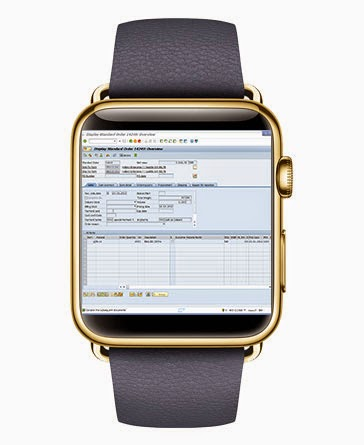
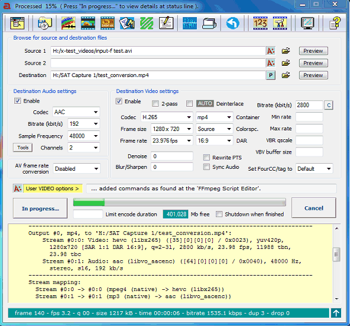
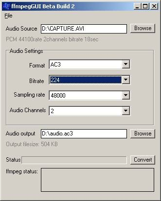
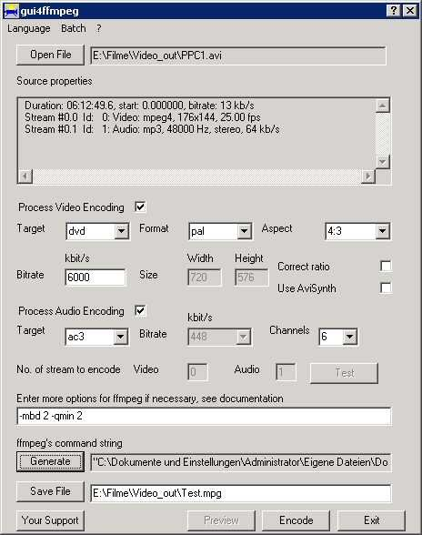

IHM A GUI for FFMPEG
Héctor SatizabalAndres Perez-Uribe

SAP GUI for the gold version Apple Watch ?
(from mindsetconsulting blog)"A picture is worth a thousand words.
An interface is worth a thousand pictures."Ben Shneiderman
The goal of this laboratory is to explore the use of Qt as means to build Graphial User Interfaces while considering the fundamental principles of design, proposed by Don Norman.
A GUI for FFMPEG
FFmpeg is a free software project that produces libraries and programs for handling multimedia data. The name of the project is inspired by the MPEG video standards group, together with "FF" for "fast forward". The project was started by Fabrice Bellard (using the pseudonym "Gérard Lantau") in 2000, and was lead by Michael Niedermayer from 2004 until 2015. The project comprises several components, like ffmpeg, ffplay, ffprobe, etc.
Developers have coded several GUI interfaces to facilitate the use of ffmpeg components. Some exemples of GUIs are: Avanti, GUI4FFMPEG, FFMPEGGUI, etc. (see below).

The objective of point 3 of this laboratory is to develop a GUI that must allow the user to generate the command line that allows her/him to trim a video by indicating star and stop times.
The GUI must contain:
A menu item allowing to exit the application A button allowing to select an input video file A text field allowing to edit the name of the input file A button allowing to select an output video file A text field allowing to edit the name of the output file A text field showing the properties of the input file (using ffprobe) A field allowing the user to select the start time of the output video A field allowing the user to select the stop time of the output video A text field showing the command line which should run ffmpeg to cut the video The GUI must give feedback to the user concerning:
Whether the input file is valid The duration of the input video Whether the output file already exists or not The start and stop time selected The overlapping between start and stop The GUI must fulfill the requirements in the checklist of design considerations (after Don Norman) presented during the last lesson. You can modify the type of interface: button, menu, slider, etc. proposed in the first list if you consider it to be more appropriate.
1. Sketch
Prepare a sketch of your FFMPEG user interface and send it by e-mail before Monday 15th October, before 12:00
User interface sketching is a kind of drawing on a paper... but it is not only a simple drawing. Its purpose is to reveal the result of problem-solving thinking. It communicates the idea to other people. Drawings does not have to be pretty but they must help you validate your idea. Sketches must also reveal the user flow, thus you may provide multiple pages of drawings illustrating the dynamics of the interface. Nevertheless, your interface might change during development.2. Report
Please, provide a brief report (max. 4 pages) presenting and accompanying your GUI. Present the issues tackled by your solution and justify your choices. Provide your code within a zip file indicating your names. Demo of your interface: Monday 5th November, 2018 at 14:00